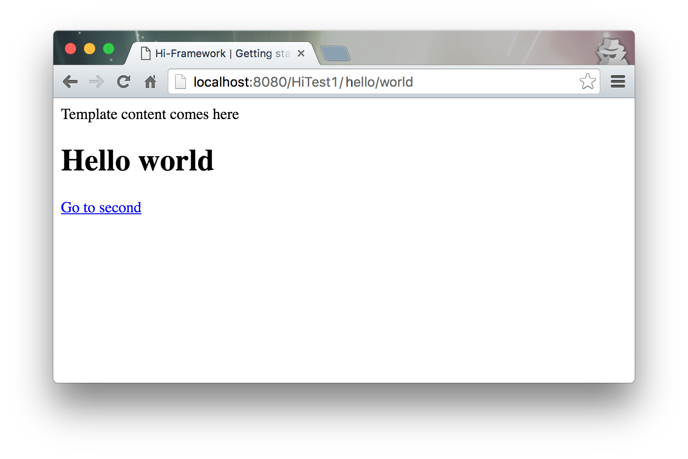
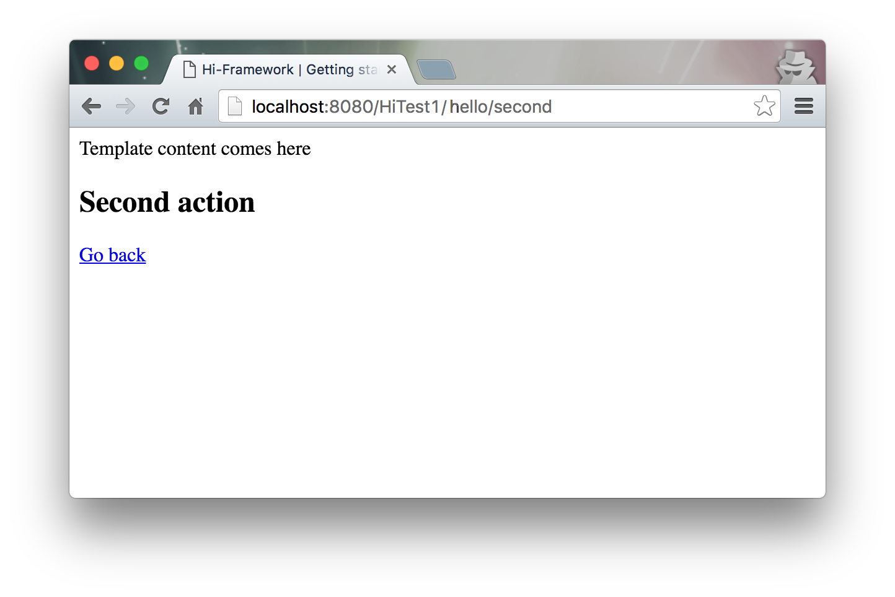

Navigation
Tuesday, July 19, 2016 1:52 PMYou wouldn't put all your business logic in a single view, would you? Lets create a new action and then figure out how can we redirect the user from one view to another.
The second action
Adding the action method
Just add the following code fragment to the Hello controller source code file.
public void second() throws MvcException{
this.callView();
}
Creating the view for the new action
All we have to do is: create two files under the directory views/hello/:
|-- views
|-- Hello
|-- world.html
|-- world.js
|-- second.html
|-- second.js
second.html
<div>
<h2>Second action</h2>
<!--This will redirect the user to hello/world using ajax-->
<a href="hello/world" ajaxify>Go back</a>
</div>
NOTE: The ajaxify attribute used above, configures the hyperlink element to perform an ajax redirect onClick.
second.js
Hi.view(function($scope){
});
Adding a redirect link to the views/hello/world.html file (method 1)
The modified views/hello/world.html version:
<div>
<h1>Hello world</h1>
<a href="hello/second" ajaxify>Go to second</a>
</div>
User can now navigate from hello/world to hello/second and vice versa. Just rebuild the application and redeploy it.
Results
 
Adding a redirect link to the views/hello/world.html file (method 2)
Let's change again our world.html file.
The modified views/hello/world.html version:
<div>
<h1>Hello world</h1>
<button ng-click="goToSecond()">Go to second</button>
</div>
We basically changed our hyperlink to a button. This button calls a function named goToSecond on a click. The ng-click tag is part of AngularJS. You can consult more about Angular anywhere in the internet.
Now, let's change our world.js file.
The modified views/Hello/world.js version:
.
Hi.view(function($scope){
$scope.goToSecond = function(){
Hi.redirect("hello/second");
}
});
We created in the $scope of our javascript view, a fuction that uses a special method called redirect witch redirects the user the same way as the first aproach.
Test it! it will work the same way!